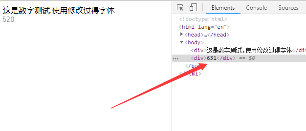
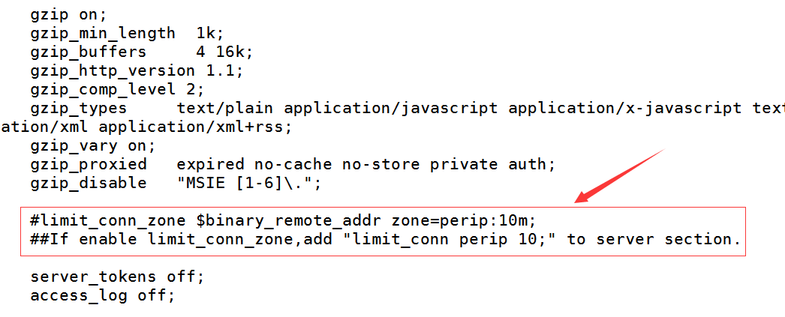
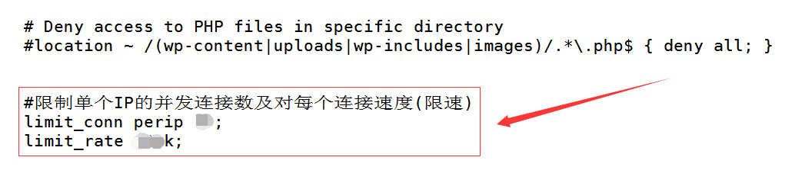
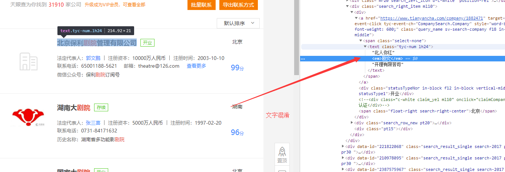
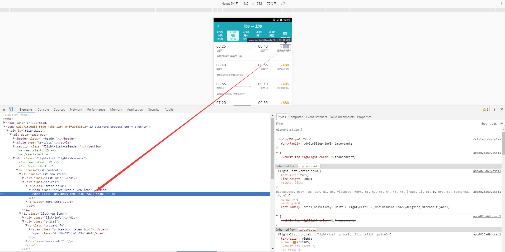

反爬虫一些方案总结和尝试
使用FontCreator尝试修改了Rookie字体,简单实现了字体混淆
实际运用可以考虑项目是否需要防爬？进而思考产品信息是否需要混淆?

反爬虫方案总结:
一、了解主流语言爬虫框架和爬虫原理

文章并没有统计nodejs，补充下node也有的
框架具体介绍就不说了，各有千秋,详情可参考 各大主流编程语言-常用爬虫框架以及优劣分析
原理说明:
- 发起请求:通过
HTTP库向目标站点发起请求，即发送一个Request，请求可以包含额外的headers等信息，等待服务器响应。 - 获取响应内容:如果服务器能正常响应，会得到一个
Response，Response的内容便是所要获取的页面内容，类型可能有HTML，Json字符串，二进制数据（如图片视频）等类型。 - 解析内容:得到的内容可能是
HTML，可以用正则表达式、网页解析库进行解析。可能是Json，可以直接转为Json对象解析，可能是二进制数据，可以做保存或者进一步的处理。 - 保存数据:保存形式多样，可以存为文本，也可以保存至数据库，或者保存特定格式的文件。
二、rate limit, user-agent过滤
为防止滥用，应该考虑对API限流。 例如，可以限制每个用户 10 分钟内最多调用API 100 次。 如果在规定的时间内接收了一个用户大量的请求，将返回响应状态代码 429 (这意味着过多的请求)。

三、并发连接数
使用Nginx限制单个IP的并发连接数能够减少一些采集程序或者DDOS的攻击。
在LNMP的Nginx配置中已经添加了部分代码，可以编辑/usr/local/nginx/conf/nginx.conf文件
注明下面的设置需要在1.1.8以上版本的Nginx的设置才有效的
查找:
#limit_conn_zone $binary_remote_addr zone=perip:10m;
将前面的#去掉，没这一行的，话加上
limit_conn_zone $binary_remote_addr zone=perip:10m;
默认情况下,如下图所示位置:

再在要设置限制连接数的虚拟主机配置里的server段里添加上
limit_conn perip 10;
### 10就是单个IP的最大并发连接数
limit_rate 100k;
### limit_rate为限速为 100KB/秒
如下图实例截图:

限制每个连接速度为100K，此限制是针对单个线程，比如，我用IE下载是100K，当用迅雷时它会占用2个线程，所以迅雷下载速度为200K，如果单个IP的并发数设置为10，则多线程下载的话速度可以达到100K×10。
最后运行 /usr/local/nginx/sbin/nginx -t 测试配置是否有错误，如没有错误执行：
/usr/local/nginx/sbin/nginx -s reload
重载配置使其生效
四、字体混淆
一些大网站为了反爬，使用了字体混淆,比如天眼查,去哪儿网
文字混淆 
数字混淆 
五、使用Fail2ban
使用Fail2ban禁止垃圾采集爬虫，保护Nginx服务器
创建过滤规则 Fail2ban使用前必须有过滤规则，创建规则nginx-badbots.conf
cd /etc/fail2ban/filter.d cp apache-badbots.conf nginx-badbots.conf vim nginx-badbots.conf内容如下:
# Fail2Ban configuration file # # Regexp to catch known spambots and software alike. Please verify # that it is your intent to block IPs which were driven by # above mentioned bots. [Definition] badbotscustom = EmailCollector|WebEMailExtrac|TrackBack/1\.02|sogou music spider badbots = -|Atomic_Email_Hunter/4\.0|atSpider/1\.0|autoemailspider|bwh3_user_agent|China Local Browse 2\.6|ContactBot/0\.2|ContentSmartz|DataCha0s/2\.0|DBrowse 1\.4b|DBrowse 1\.4d|Demo Bot DOT 16b|Demo Bot Z 16b|DSurf15a 01|DSurf15a 71|DSurf15a 81|DSurf15a VA|EBrowse 1\.4b|Educate Search VxB|EmailSiphon|EmailSpider|EmailWolf 1\.00|ESurf15a 15|ExtractorPro|Franklin Locator 1\.8|FSurf15a 01|Full Web Bot 0416B|Full Web Bot 0516B|Full Web Bot 2816B|Guestbook Auto Submitter|Industry Program 1\.0\.x|ISC Systems iRc Search 2\.1|IUPUI Research Bot v 1\.9a|LARBIN-EXPERIMENTAL \(efp@gmx\.net\)|LetsCrawl\.com/1\.0 \+http\://letscrawl\.com/|Lincoln State Web Browser|LMQueueBot/0\.2|LWP\:\:Simple/5\.803|Mac Finder 1\.0\.xx|MFC Foundation Class Library 4\.0|Microsoft URL Control - 6\.00\.8xxx|Missauga Locate 1\.0\.0|Missigua Locator 1\.9|Missouri College Browse|Mizzu Labs 2\.2|Mo College 1\.9|MVAClient|Mozilla/2\.0 \(compatible; NEWT ActiveX; Win32\)|Mozilla/3\.0 \(compatible; Indy Library\)|Mozilla/3\.0 \(compatible; scan4mail \(advanced version\) http\://www\.peterspages\.net/?scan4mail\)|Mozilla/4\.0 \(compatible; Advanced Email Extractor v2\.xx\)|Mozilla/4\.0 \(compatible; Iplexx Spider/1\.0 http\://www\.iplexx\.at\)|Mozilla/4\.0 \(compatible; MSIE 5\.0; Windows NT; DigExt; DTS Agent|Mozilla/4\.0 efp@gmx\.net|Mozilla/5\.0 \(Version\: xxxx Type\:xx\)|NameOfAgent \(CMS Spider\)|NASA Search 1\.0|Nsauditor/1\.x|PBrowse 1\.4b|PEval 1\.4b|Poirot|Port Huron Labs|Production Bot 0116B|Production Bot 2016B|Production Bot DOT 3016B|Program Shareware 1\.0\.2|PSurf15a 11|PSurf15a 51|PSurf15a VA|psycheclone|RSurf15a 41|RSurf15a 51|RSurf15a 81|searchbot admin@google\.com|ShablastBot 1\.0|snap\.com beta crawler v0|Snapbot/1\.0|Snapbot/1\.0 \(Snap Shots, \+http\://www\.snap\.com\)|sogou develop spider|Sogou Orion spider/3\.0\(\+http\://www\.sogou\.com/docs/help/webmasters\.htm#07\)|sogou spider|Sogou web spider/3\.0\(\+http\://www\.sogou\.com/docs/help/webmasters\.htm#07\)|sohu agent|SSurf15a 11 |TSurf15a 11|Under the Rainbow 2\.2|User-Agent\: Mozilla/4\.0 \(compatible; MSIE 6\.0; Windows NT 5\.1\)|VadixBot|WebVulnCrawl\.unknown/1\.0 libwww-perl/5\.803|Wells Search II|WEP Search 00|ZmEu|spiderman|sqlmap|FeedDemon|JikeSpider|Indy Library|Alexa Toolbar|AskTbFXTV|AhrefsBot|CrawlDaddy|CoolpadWebkit|Java|Feedly|UniversalFeedParser|ApacheBench|Microsoft URL Control|Swiftbot|ZmEu|oBot|jaunty|Python-urllib|lightDeckReports Bot|YYSpider|DigExt|YisouSpider|HttpClient|MJ12bot|heritrix|EasouSpider|LinkpadBot|YandexBot|RU_Bot|200PleaseBot|DuckDuckGo-Favicons-Bot|Wotbox|SeznamBot|Exabot|SemrushBot|PictureBot|SMTBot|SEOkicks-Robot|AdvBot|TrueBot|BLEXBot|WangIDSpider|Ezooms failregex = ^ -.*"(GET|POST|HEAD).*HTTP.*" \d+ \d+ ".*" "(?:%(badbots)s|%(badbotscustom)s)" (-|.*)$ ignoreregex = # DEV Notes: # List of bad bots fetched from http://www.user-agents.org # Generated on Thu Nov 7 14:23:35 PST 2013 by files/gen_badbots. # # Author: Yaroslav Halchenko默认badbots没有很多，而且比较老，根据自己需要我又添加了下，同时也检查过滤空的user agent
检查过滤规则
检查正则表达式写的对或者不对，可以使用fail2ban-regex命令，具体用法如下所示。
fail2ban-regex /var/log/nginx/access.log /etc/fail2ban/filter.d/nginx-badbots.conf创建jail规则
和SSH等一样，单独创建nginx的jail规则文件。
vim /etc/fail2ban/jail.d/nginx.local例如:
[nginx-badbots] enabled = true port = http,https filter = nginx-badbots logpath = /home/wwwlogs/access.log /home/wwwlogs/www.sijitao.net.log maxretry = 3这里可以指定多个日志文件的路径.
重启fail2ban
service fail2ban restart查看iptables规则是否生效
iptables --list -n